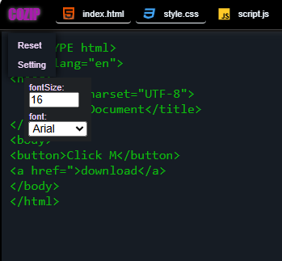

COZIP the best online html css js Code Editor
Features of COZIP
- provide a code editor for writing code
- provide an interective theme
- provide an optimization setting
- show livePreview without any refresh
1.TextEditor
when you open the COZIP the codeeditor will open automatically if the codeeditor is not open automatically the manual option is also available
Image

2.Interective Theme
COZIP provide an interective environment for beginner programmer that they can code more efficiently
Image

3.Optimization
COZIP allow to choose the fontsize and fontfamily for code attractivity
Image
4.Live Preview
The main and big feature of COZIP is to show the livePreview or Result of your code you are not refresh again and again. click the run button and show the preview
Image

Limitations of COZIP
- It cannot use to build a large Project
- It cannot allow to full grip on JavaScript, mosly javascript can cause paralization of COZIP
- It cannot make a new file or folder it provide a built-in made files of .html .css and .js
Prefers
- COZIP prefer to use it for small practice work
- COZIP prefer to use it for Html, Css and little bit of JavaScript